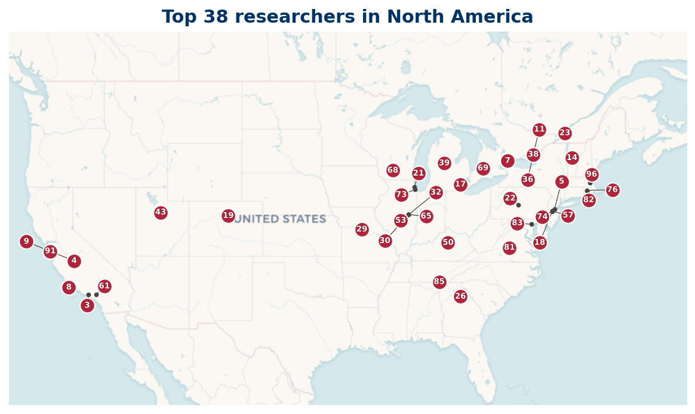
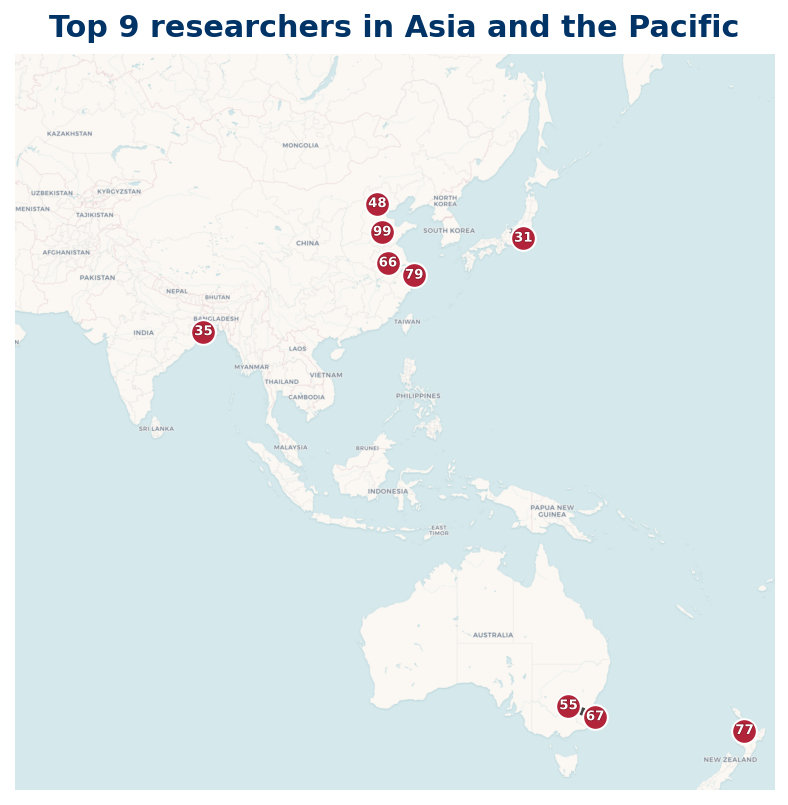
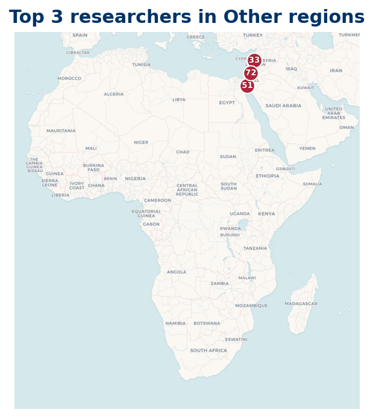

Location
Where the Top 100 are based
Each researcher in the Top 100 is grouped by the country of their current institution. Choose a region to see its listing. The map for each region shows where its researchers are based.

North America : 38 researchers

Europe : 28 researchers

Asia and the Pacific : 21 researchers

Other regions : 5 researchers
8 researchers could not be placed on the map because their country is not yet verified.